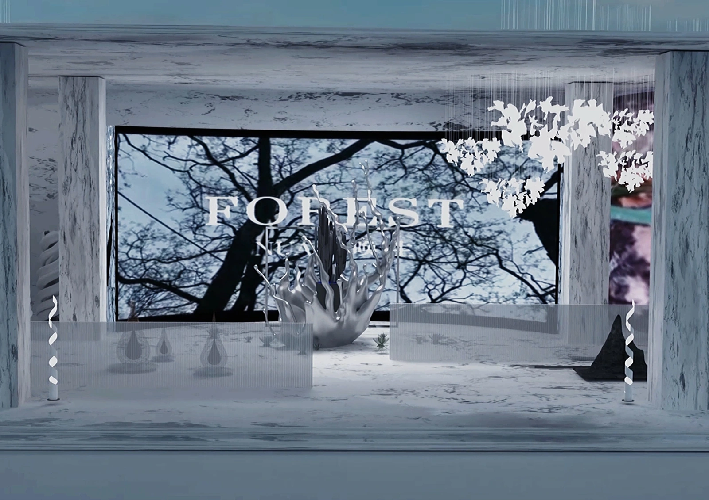
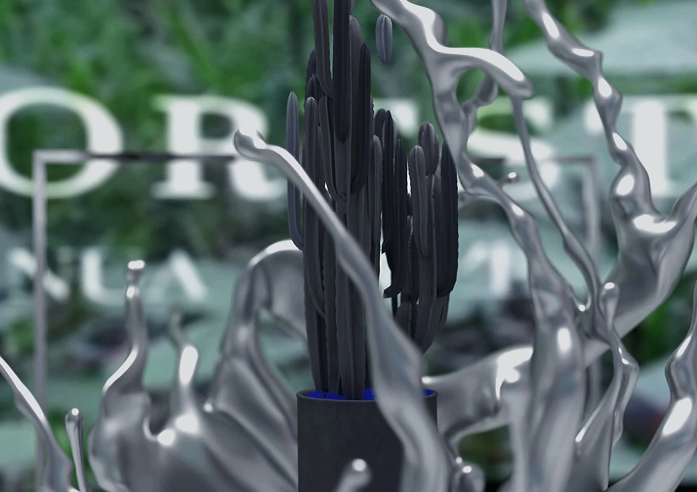
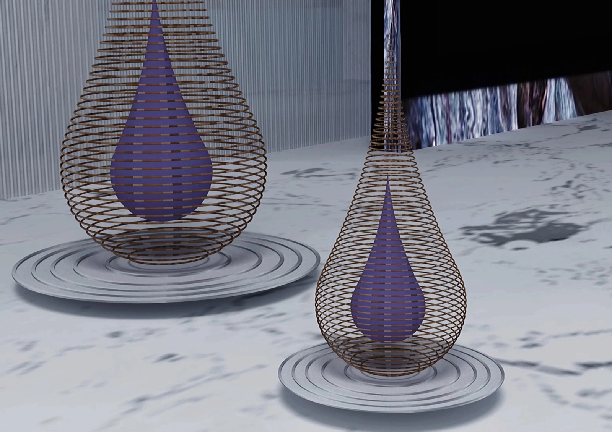
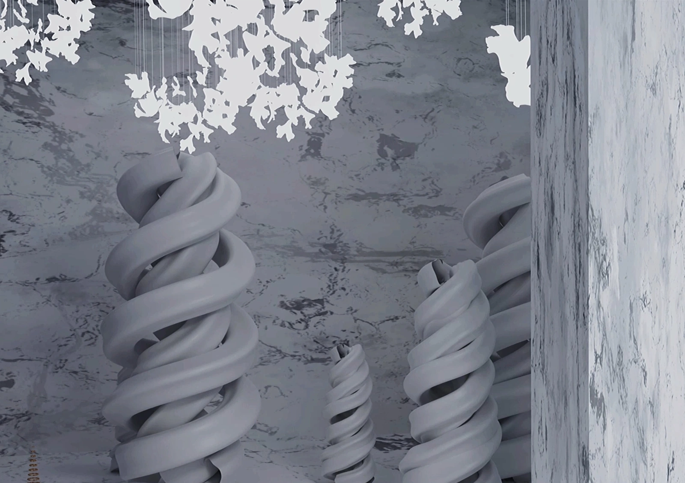
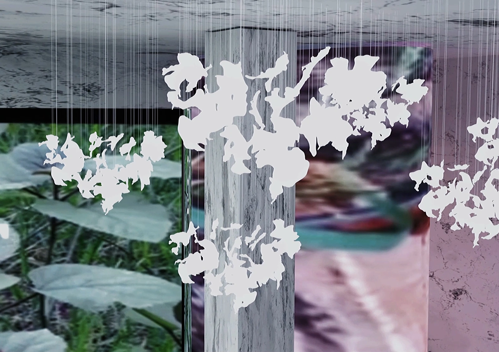
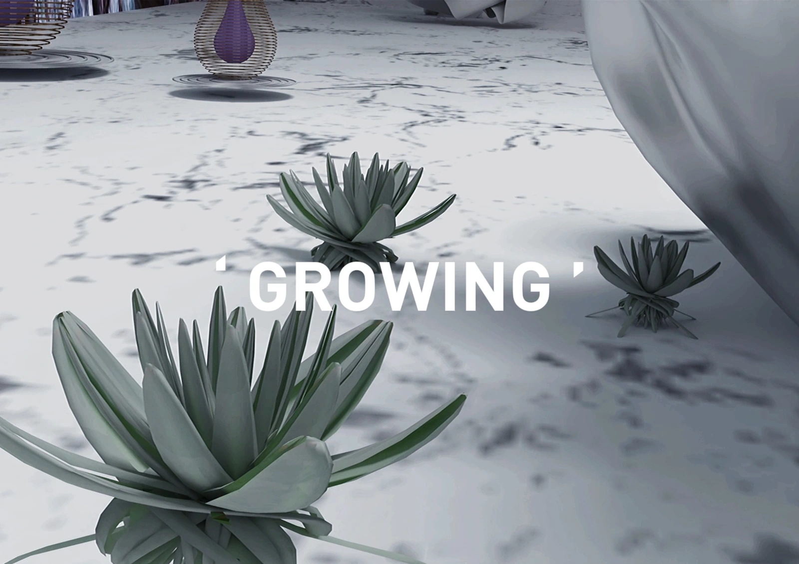

Collaborative virtual exhibition concept
Rebirth & Illusion
Plant life,
recast in artificial matter.
A virtual exhibition that combines botanical forms, metallic surfaces, sculptural objects and moving images. The work asks how an artificial environment can make the relationship between people and plant life feel unfamiliar again.

Recognisable as plants.
Unfamiliar as materials.
The scene uses a tension between organic forms and constructed surfaces. Metallic branches, layered vessels and pale sculptural forms sit beside images of living vegetation.






Experience the sequence,
not only the still image
The film moves through the virtual exhibition, showing animation, changes of viewpoint and the relationship between objects and screens. Motion and spatial juxtaposition are central to the proposal.
Images become
part of the architecture
Screens and translucent layers form boundaries within the scene. Botanical imagery appears both as a representation on a surface and as a spatial object, so visitors are imagined encountering the same subject in different material forms.




A proposal for reflection
The intention is to invite reflection on human relationships with vegetation. A future physical installation would need material tests, projection studies and a visitor route; emotional and environmental-learning outcomes would need separate evaluation.
Team credit follows the original project registration: 龚珈萱、顾小漩、丁子轩. Sources: the project statement, original rendered film and images labelled as simulated exhibition views. No award, physical construction or measured visitor impact is inferred from the registration materials.